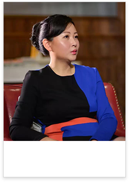

分享会.起因
金融业在目前中国社会发展中可谓是炙手可热的行业，不同于其他行业，它的入门门槛高，因此行业平均薪酬也常高于其他行业。对于企业所支付的薪酬水平而言，由于行业薪酬市场不透明极易产生资源浪费，于是这成为了当今企业家及HR高管们所关心的问题。
分享会.介绍
2016-2017年金融业人才趋势及薪酬报告分享大会是由51金融圈牵头，联合美世咨询共同发起的一次行业分享会。本次分享大会是专为金融行业相关负责薪酬、福利、人才管理、领导力和人才多样性挑战的人力资源资深人士举办的专业型分享会。届时，获评全球女性创业者大会“十佳女性创业案例”的51金融圈创始人将携美世咨询资深调研专家及优秀金融企业HR高管们，将带您共同探讨当前薪酬发展趋势，人力资源的满满干货，加上思想上的碰撞，必定带来智慧的成长。我们提供了一个强大平台，只为有力的支持企业发展。资源共享，互动双赢！
分享会.领军人物

韩芳
51金融圈创始人
荣获“2017十佳女性创业案例”荣誉
不忘初始志 , 始终在路上。
在2017十佳女性创业案例评选中，51金融圈创始人韩芳女士，获得了这一殊荣。51金融圈作为中国领先的金融职业平台，利用前瞻思维结合科技实力，有效解决“金融人才求职难”、“金融行业招聘难”的综合人力资源服务平台。创始人韩芳，在一切追求效率、利益最大化的时代，她始终如一保持着对人力源事业的热爱，穷其一生为了梦想，开创出一片新天地—51金融圈。51金融圈率先推出企业视频介绍和可视化远程面试，招聘云系统更能帮助企业建设专属的人才库和招聘流程化管理。“云招聘”系统的创新与突破，做到人才与职位的匹配精准，解决了传统招聘平台耗时长，效率低的问题。
分享会.深入探究
- 活动时间：2017年8月25日下午13:00-16：30
- 活动地点：上海浦东新区东方路899号浦东假日酒店3楼汉厅
分享会.精彩SHOW
2016-2017年金融业薪酬报告分享会
- 13：00-13：30
签到
- 13：30-13：35
活动开场
- 13：35-14：20
51金融圈创始人，作为阿里巴巴全球女性十佳创业案例分享
51金融圈，作为金融业领先职场平台与金融HR进行人力资源综合解决方案的交流沟通
- 14：20-14：40
茶歇
- 14：40-15：40
美世咨询2016-2017年金融业薪酬报告分享
- 15：40-16：30
金融行业资深HR高管经验分享
分享会.更多精彩
本次分享活动，由51金融圈与全球知名咨询机构美世共同深耕细作，通过对行业发展趋势的研究，倾情打造。届时，行业内专业人士都将出席该活动，共同交流，期待你的到来！！！

微信扫码 · 了解活动圈最新活动
简历信息及招聘进程一目了然
- 打开手机微信
 点击右上方扫一扫
点击右上方扫一扫